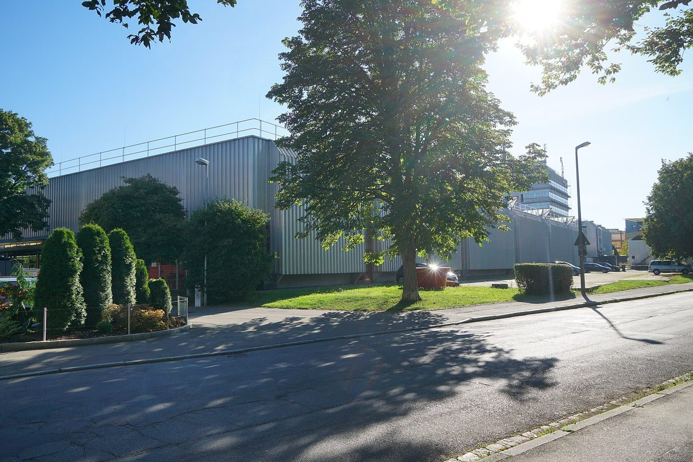

독일 튀빙겐 시영 에너지회사, 첫 시민 직접 투자 상품 내놔…트라우프비젠 태양광 단지에 500유로부터, 자사 에너지 고객 연 4%

'swt-시민투자'는 기간 7~10년 후순위 대출 방식, 그 밖 시민은 연 3.5%…첫 이자 2027년 12월 31일, 연방도로 B27 따라 1km 넘게 이어진 회사 최대 지상 태양광·배터리 단지
독일 바덴뷔르템베르크주 튀빙겐시의 시영 에너지회사(Stadtwerke Tübingen, SWT)가 자사 태양광 단지에 시민이 직접 돈을 넣을 수 있는 첫 투자 상품 'swt-시민투자(swt-BürgerInvest)'를 내놨다. 투자 대상은 연방도로 B27을 따라 루스트나우와 키르헨텔린스푸르트 사이에 1km 넘게 이어진 트라우프비젠(Traufwiesen) 태양광 단지로, 배터리 저장장치를 함께 갖춘 이 회사의 지상 태양광 가운데 지금까지 가장 큰 설비다. 최소 투자액은 500유로이며, 회사 지분을 사는 것이 아니라 기간 7~10년의 후순위 대출(qualifiziertes Nachrangdarlehen)로 돈을 빌려주는 형태다. 이자는 SWT와 전기·가스 계약을 맺은 고객에게 연 4%, 그 밖의 시민에게 연 3.5%로, 해마다 다음 해 첫 분기에 지급되며 첫 지급일은 2027년 12월 31일이다. SWT는 원칙적으로 모든 시민이 참여할 수 있다고 밝히고, 지역 에너지 사업에 참여할 길을 만드는 동시에 구체적인 사업 하나에 필요한 자본을 모으려는 것이라고 설명했다.
시민에너지 관점
최소 500유로로 문턱을 낮추고 자기 회사 전기·가스 고객에게 이자를 0.5%포인트 더 얹은 것은, 공공 에너지회사가 동네 태양광 단지의 이익을 지역 주민 쪽으로 먼저 돌리려는 설계로 읽힌다. 다만 후순위 대출은 회사 사정이 나빠지면 다른 빚보다 늦게 돌려받는 돈이고 투자자에게 의결권도 없어, 시민은 이자를 받을 뿐 단지를 어떻게 운영하고 수익을 어디에 쓸지는 정하지 못한다. 출자액과 관계없이 조합원 한 사람이 한 표를 갖는 에너지협동조합과 견주면, 돈을 빌려주는 참여와 주인으로서의 참여는 분명히 다르다. 국내 지자체·공공기관 태양광에 시민 투자를 붙일 때도 채권·대출형에서 멈추지 말고 주민 협동조합이 지분과 의결권을 함께 갖는 길을 열어야 한다.
출처: Südwest Presse 2026-10-29 swp 원문 보기
ドイツ・テュービンゲン市営エネルギー会社、初の市民直接投資商品…トラウフヴィーゼン太陽光発電所に500ユーロから、自社エネルギー顧客は年4%
「swt市民投資」は期間7～10年の劣後ローン方式、それ以外の市民は年3.5%…初回利払いは2027年12月31日、連邦道路B27沿いに1km以上続く同社最大の地上設置太陽光・蓄電池発電所
ドイツ・バーデン＝ヴュルテンベルク州テュービンゲン市の市営エネルギー会社（シュタットヴェルケ・テュービンゲン、SWT）が、自社の太陽光発電所に市民が直接資金を出せる初の投資商品「swt市民投資（swt-BürgerInvest）」を打ち出した。投資対象は、連邦道路B27に沿ってルストナウとキルヒェンテリンスフルトの間に1km以上続くトラウフヴィーゼン（Traufwiesen）太陽光発電所で、蓄電池を併設した同社の地上設置型太陽光としてはこれまでで最大の設備だ。最低投資額は500ユーロで、会社の持ち分を買うのではなく、期間7～10年の劣後ローン（qualifiziertes Nachrangdarlehen）として資金を貸し付ける形をとる。利率はSWTと電気・ガスの契約を結んでいる顧客が年4%、それ以外の市民が年3.5%で、毎年翌年の第1四半期に支払われ、初回の支払日は2027年12月31日となる。SWTは原則としてすべての市民が参加できるとし、地域のエネルギー事業に参加する道をつくると同時に、具体的な事業一つに必要な資本を集める狙いだと説明した。
市民エネルギーの視点
最低500ユーロとハードルを下げ、自社の電気・ガス顧客には利率を0.5ポイント上乗せしたことは、公共のエネルギー会社が地元の太陽光発電所の利益をまず地域住民の側に回そうとする設計と読める。ただし劣後ローンは会社の経営が悪化すれば他の借入金より後に返される資金であり、投資家に議決権もないため、市民は利息を受け取るだけで、発電所をどう運営し収益を何に使うかは決められない。出資額にかかわらず組合員一人が一票を持つエネルギー協同組合と比べれば、お金を貸す参加と持ち主としての参加ははっきり異なる。韓国の自治体・公共機関の太陽光に市民投資を組み合わせる際も、債券・ローン型にとどまらず、住民協同組合が持ち分と議決権をともに持つ道を開くべきだ。
出典: ジュートヴェスト・プレッセ（Südwest Presse） 2026-10-29 swp 原文を読む
德国图宾根市营能源公司推出首个市民直接投资产品…投资特劳夫维森光伏电站500欧元起，本公司能源客户年息4%
“swt市民投资”为期限7至10年的次级贷款形式，其他市民年息3.5%…首笔利息2027年12月31日支付，电站沿B27联邦公路绵延1公里以上，是该公司最大的地面光伏加储能电站
德国巴登-符腾堡州图宾根市的市营能源公司（Stadtwerke Tübingen，SWT）推出首个让市民直接出资投入其光伏电站的投资产品“swt市民投资（swt-BürgerInvest）”。投资对象是沿B27联邦公路、在鲁斯特瑙与基尔兴特林斯富尔特之间绵延1公里以上的特劳夫维森（Traufwiesen）光伏电站，这是该公司迄今规模最大、配套储能电池的地面光伏设施。最低投资额为500欧元，形式不是购买公司股份，而是以期限7至10年的次级贷款（qualifiziertes Nachrangdarlehen）把钱借给公司。与SWT签有电力或燃气合同的客户年息4%，其他市民年息3.5%，利息每年在次年第一季度支付，首个付息日为2027年12月31日。SWT表示原则上所有市民都可参与，目的是为参与本地能源项目开辟渠道，同时为一个具体项目筹集所需资本。
市民能源视角
以最低500欧元降低门槛，并给本公司电力和燃气客户多加0.5个百分点利息，可以看作公共能源公司有意把本地光伏电站的收益优先引向当地居民的设计。不过，次级贷款在公司经营恶化时要排在其他债务之后偿还，投资者也没有表决权，市民只能收取利息，无法决定电站如何运营、收益用在哪里。与不论出资多少、每位社员一人一票的能源合作社相比，借钱给公司的参与和作为主人的参与明显不同。韩国在地方政府和公共机构光伏项目中引入市民投资时，也不应止步于债券或贷款形式，而要为居民合作社同时持有股份和表决权打开通道。
来源: 西南新闻报（Südwest Presse） 2026-10-29 swp 查看原文
Tübingen's municipal energy company launches its first direct citizen investment product, from 500 euros in the Traufwiesen solar park, paying its own energy customers 4% a year
swt-BürgerInvest takes the form of a subordinated loan running 7 to 10 years, with other citizens earning 3.5% a year; first interest due 31 December 2027 from the company's largest ground-mounted solar and battery park, stretching more than 1km along federal road B27
Stadtwerke Tübingen (SWT), the municipal energy company of Tübingen in the German state of Baden-Württemberg, has launched swt-BürgerInvest, its first product allowing citizens to put money directly into one of its solar parks. The investment goes into the Traufwiesen solar park, which stretches for more than 1km along federal road B27 between Lustnau and Kirchentellinsfurt and is the company's largest ground-mounted solar installation to date, complete with battery storage. The minimum stake is 500 euros, and rather than buying equity in the company, investors lend it money through a qualified subordinated loan (qualifiziertes Nachrangdarlehen) with a term of 7 to 10 years. Customers with SWT electricity or gas contracts earn 4% a year and all other citizens 3.5%, with interest paid annually in the first quarter of the following year and the first payment due on 31 December 2027. SWT said the offer is in principle open to all citizens and is meant both to create ways to take part in local energy projects and to raise capital for one specific project.
Citizen Energy View
Setting the entry point at 500 euros and adding half a percentage point of interest for the company's own electricity and gas customers reads as a design meant to steer the gains from a local solar park towards local residents first. But a subordinated loan is money repaid after other debts if the company runs into trouble, and it carries no voting rights, so citizens collect interest without any say in how the park is run or where its profits go. Compared with an energy co-operative, where every member has one vote regardless of how much they invest, lending money and taking part as an owner are clearly different things. When Korea attaches citizen investment to solar projects run by local governments and public bodies, it should not stop at bonds and loans but open a path for residents' co-operatives to hold both equity and votes.
Source: Südwest Presse 2026-10-29 swp Read the original